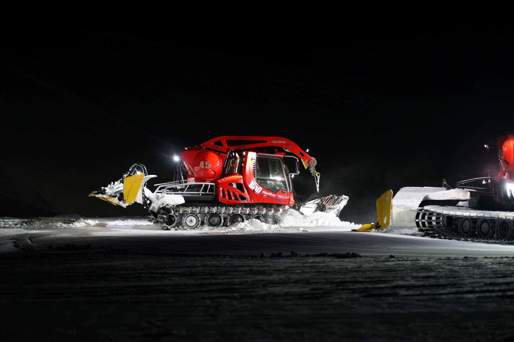

Functional Galery

Pistenbully im Tageslicht
Kein Effekt
Dieses Bild hat keinen Effekt und ist "vanilla"

Pistenbully in der Nacht
Grayfilter
Das Bild wird Schwarz-Weiss gemacht. Wie im 19. Jahrhundert

Betrunkener Pistenbully
Blur effect
Das Bild wird verschwommen, als wäre man betrunken :)

Kontrastreicher Pistenbully
Kontrast effect
Der Kontrast wird start erhöht (um 200%)

Invertierter Pistenbully
Invert effect
Die Farben werden Invertiert. Das heisst, dass sich die Farben "umkehren". Weiss wird zu Schwarz und umgekehrt.

Pistenbully auf Drogen
Hue Rotation effect
Goldenen Schnitt Die Farben werden Invertiert. Das heisst, dass sich die Farben "umkehren". Weiss wird zu Schwarz und umgekehrt.

Pistenbully ist gesättigt
Pistenbully ist gesättigt
Saturate effect
Auf das Bild wurde ein sättigungs Filter angewendet.
Invert Slider

Popup

×